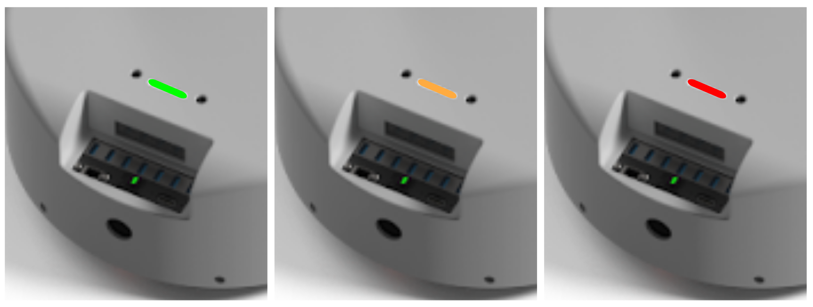
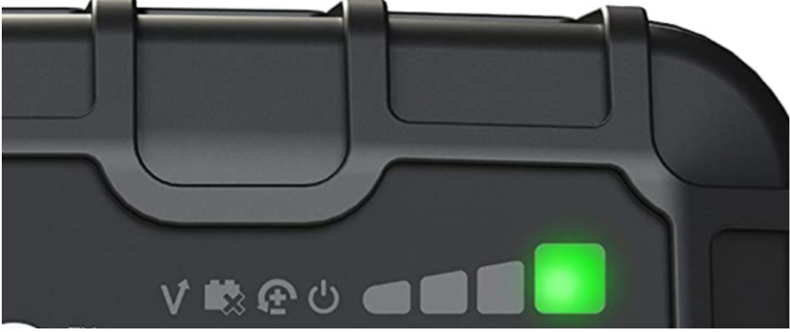
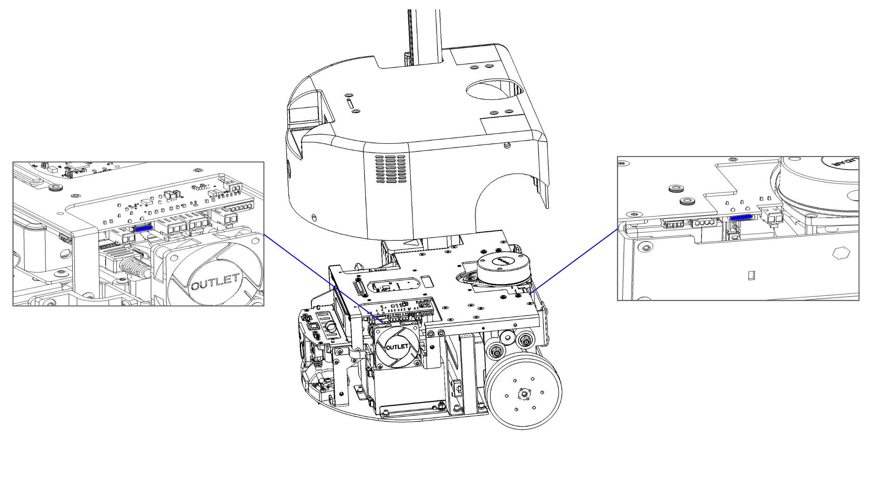
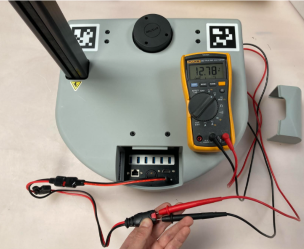

Stretch RE2 - Battery Maintenance Guide
Overview
Stretch RE2 utilizes two 12V AGM SLA batteries that provide a combined 18AH of capacity. Maintaining an adequate level of charge on the battery system will enhance the battery lifetime.
The run time for a fully charged system is dependent on the load use case. The majority of battery power is consumed by the NUC computer as Stretch uses relatively low power motors.
A fully charged robot running a high CPU load can run approximately 2 hours before requiring a recharge.
A fully charged robot powered on but with minimal load can run approximately 5 hours before requiring a recharge.
State of Battery Charge
An accurate measure of the battery charge isn't available on Stretch (as this requires a coulomb counting system). A coarse approximation of battery charge is given by the battery voltage.
For RE2 during normal operation with a moderate load the relationship between voltage and charge is roughly:
| Voltage | Charge | LED Light Bar |
|---|---|---|
| 11.5 - 13.4V | 80%+ | Bright green |
| 11.0 - 11.5V | 60%+ | Yellow |
| 10.5 - 11.0V | 40%+ | Orange |
| Below 10.5V | <40% | Red |
As shown below, the LED lightbar color provides an indication of the battery voltage.

When To Plug in the Charger
We recommend plugging in the charger whenever:
- The battery voltage is below 11V (lightbar is orange).
- The robot is not running untethered
- The robot is producing a periodic beeping sound
Accidental Full Discharge
Stretch includes a few feature to help prevent accidental full discharge (for example, if the robot is left on overnight not plugged to its charger)
- Audible warning: Stretch will beep every 2 seconds if the battery voltage drops below 10.5V
- Hard power off: Stretch will completely power off if the battery voltage drops below 9.75V
Charger
Stretch ships with a NOCO Genius 10 charger. Please review the battery charger user manual prior to following the guidance in this document.
Stretch utilizes four of the available modes on these chargers.
| Mode | Function |
|---|---|
| STANDBY | Charger not charging the robot |
| 12V AGM | Charging robot powered down |
| SUPPLY | 1) Power the robot during tethered use 2) Repair damaged batteries. |
| REPAIR | Repair damaged batteries. |
NOCO Genius 10 - Interface

| Mode | Procedure |
|---|---|
| STANDBY | Illuminates when charger not charging |
| 12V AGM | 1) From STANDBY, charger attached 2) Press MODE button repeatedly until 12V AGM indicator is illuminated |
| SUPPLY | 1) From STANDBY, charger not attached 2) Press and hold MODE button for 3s 3) Press MODE button until SUPPLY indicator is illuminated 4) Attach charger |
| REPAIR | 1) From STANDBY, charger attached 2) Press and hold MODE button for 3s 3) Press MODE button until REPAIR indicator is illuminated |
Checking the Battery Charge
The battery charger LEDs provide an approximate indicator of battery charge when it is in 12V AGM mode. Batteries are 100% fully charge when the green LED is not fading in and out.

Charging Best Practices
It is possible to accidentally deeply discharge the batteries by leaving the robot on for long durations without the charger attached. This is similar to leaving the lights on your car where the battery will continue to drain until fully discharged.
We recommend following the best practices below to avoid deep discharge of the batteries and to ensure they have a long lifespan.
| Use Case | Best Practice | Reason |
|---|---|---|
| Robot is in use - tethered | Leave the charger attached in SUPPLY mode while developing on the robot whenever possible. Shutdown and power off the robot when development is done. |
Running the robot while attempting to charge in 12V AGM mode can cause issues and is generally bad for battery health. SUPPLY mode is preferred whenever the robot needs to be powered on. |
| Robot is in use - untethered | Regularly check the battery voltage using the command line tool. Shutdown the computer and power off the robot when voltage falls below 11.5V. Attach the charger in 12V AGM mode. Charge to 100% before resuming operation. |
The 12V AGM charge mode expects the battery voltage to be above 10.5-11V in order to operate. |
| Robot is not in use | Shutdown the computer and turn off the robot power. Leave the charger attached and place it in 12V AGM mode. |
Leaving the robot power on may cause the batteries to deep discharge The charger will maintain a ‘trickle charge’ on the battery, keeping the charge at 100%. |
| Robot is coming out of storage | Attach charger in 12V AGM mode and charge for 2-3 hours until charger reports 100% | SLA batteries naturally lose charge over time due to ‘self-discharge’. |
Troubleshooting
| Issue | How to Diagnose | Cause | Corrective Procedure |
|---|---|---|---|
| Robot shows no power on activity | Nothing happens when you toggle on the robot’s power switch. There is no visible illumination of LEDs, motion of the laser range finder, or audible noise of the robot fans. |
The robot fuse may have blown. When the batteries drain the current required to maintain power goes up, which can ultimately blow the fuse. |
Proceed to “Changing the Fuse” steps below |
| Robot powers on momentarily | When you toggle on the robot’s power switch some activity occurs (illumination of LEDs, audible noise of robot fans, etc) but the computer fails to boot. | The battery voltage is too low to maintain power. As the power draw increases during power-on, the voltage dips and causes the system to shut down. |
Connect the battery charger in 12V AGM mode and leave until fully charged. |
| Battery won’t charge in 12V AGM mode | When the robot is powered down and the charger is connected in 12V AGM mode, the charger eventually switches to a different mode. | The battery voltage is too low for the charger to function correctly in normal operation. | Proceed to the “Recovering from Low Battery Voltage” steps below. |
| Charger reports 100% charge but the batteries are discharged | When the robot is powered down and the charger is connected in 12V AGM mode, the charger status shows 100%. However the robot fails to turn on properly. |
Damage to the batteries (usually caused by excessively low voltage) may artificially raise the open circuit voltage of the battery, causing the battery to appear fully charged, while providing low capacity. | Proceed to the “Recovering from Low Battery Voltage” steps below. |
| Charger will not charge or stay in any mode. | When placed in 12V AGM, SUPPLY, or REPAIR mode, it continually reverts to STANDBY mode after ~ 20 minutes. | Charger may be defective. | Contact Hello Robot Support for a replacement. |
Recovering from Low Battery Voltage
- Turn off the robot power switch and detach the charger from the robot
- Place charger in SUPPLY Mode
- Allow robot to charge for 4-8 hours, or up to 24 hours for extreme discharge
- Switch the charger to 12V AGM mode
- Charge until at 100%
Additional Information
Powering Down the Robot
The recommended power down procedure is
- Place a clamp on the mast below the shoulder to prevent dropping
- Shutdown the computer from the Desktop or via SSH
- When the laser range finder has stopped spinning, turn off the main power switch
Replacing the Fuse
Stretch RE2 has two automotive fuses inside the base that may need to be replaced.
| Fuse Type | Recommended Fuse |
|---|---|
| 7.5A ATM Fast Blow Blade | Bussman VP/ATM-7-1/2-RP |
The fuse locations are shown below. For guidance on replacing the fuse, contact Hello Robot support: support@hello-robot.com.

Checking the Battery Voltage
Battery voltage is not always an accurate indicator of battery charge but it can be a useful proxy.
A charged battery will typically report a voltage of 12-12.8V and will maintain that voltage across load conditions. Meanwhile, a partially charged battery may report anywhere from 10-12.8V but its voltage will drop rapidly when loaded.
Measuring Battery Voltage from the Command Line
The battery voltage and current draw can be checked from the command line:
$ stretch_robot_battery_check.py
[Pass] Voltage with 12.9889035225
[Pass] Current with 2.46239192784
[Pass] CPU Temp with 56.0
Measuring Battery Voltage with a DMM
When troubleshooting a deeply discharged battery it may be useful to directly measure the battery voltage with a digital multimeter (DMM). To do this we recommend
- Detach the charger cable at its inline connector
- Apply the DMM to the connector contacts as shown
- Plug the charge cable into the charge port of the robot
NOTE: Caution should be taken as it is possible to short the battery when doing this.

Repairing Damaged Batteries
It is possible for Stretch's batteries to become damaged due to repeated deep discharge. If the robot has continued issues maintaining a charge we recommend attempting the following procedure:
CAUTION: The repair cycle procedure requires you to do a repair cycle on one battery at a time, which means you need to unplug each battery, perform the repair, and then repeat the process on the other battery. If you fail to repeat the procedure on the other battery, there is a potential risk that high amounts of current may flow from the repaired battery to the other one, causing damage to both the battery and the system.
- Turn off the robot power switch
- Attach the charger to the robot and set it to 12V AGM mode. Allow the robot to fully charge
- Detach the charger from the robot
- Unplug 1 battery from the robot. For guidance on how to access the battery connectors, please contact Hello Robot support: support@hello-robot.com
- Attach the charger and place it in REPAIR mode
- Place the charger in REPAIR mode
- Wait until the repair cycle has completed and the charger returns to standby - up to 4 hours
- Repeat steps 3 to 6 for the second battery
Replacing Damaged Batteries
It is possible for a mechanically skilled person to replace the Stretch batteries should it be necessary . Please contact Hello Robot Support for more information (support@hello-robot.com)